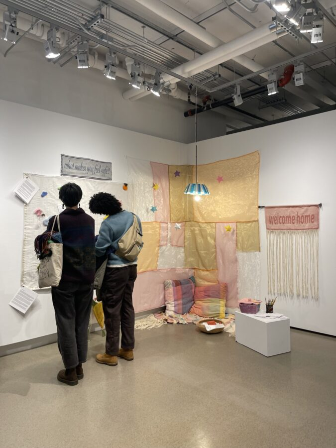

Nehir Uslu: Holding Space
Nehir Uslu’s Holding Space features interactive fiber works, soft objects, and weavings that invite visitors to engage in reflection, intentional rest, and care. Informed by Uslu’s experience in mental health advocacy and working in clinical settings, the works center softness as an active site of belonging, emotional presence, and understanding.
Through tactile surfaces, gentle soft prompts for introspection, and opportunities for collaborative arrangement and play, the show frames fibers not only as a medium of comfort, but also as a method of practicing relational care.
On view February 13-March 7, 2026 at Art City. Join us for the opening reception at 5-9pm on February 13, 2026.